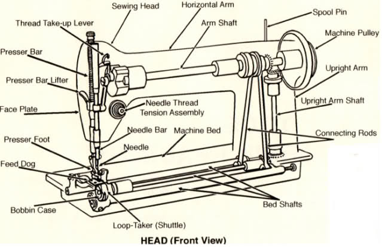

A sewing machine is a machine used to stitch fabric and other materials together with thread.
Sewing machines were invented during the first Industrial Revolution,by the English inventor Thomas Saint, that made the first sewing machine design ever.

Fabric comes in many weights: lightweight (thin and see-through), midweight (feels more substantial
than lightweight fabric) and heavyweight (very thick).
Fabric also has stretch, you can tell how stretchy a fabric is by pulling it in various directions.
Fabric can be natural (if it's made of cotton, silk, linen, bamboo, etc.), or manmade (polyester, nylon...)
If you are a beginner, you should start with a midweight, natural fabric; practice using a fabric with a striped pattern.
First, try to sew a straight edge: choose a medium stitvh lenght and set the machine to "straight stitch".
Begin with the needle in the highest position, pull up presser foot, draw out the top and bobbin threads for about 6 inches back from the feed dog.
Be sure to hold on to the top and bobbin threads, as they can be "sucked" into the machine on the first stitches!
Place the fabric under the needle and bring down the presser foot; guide the fabric with your fingers. Stop the needle when it's in its
highest position, gently pull out the fabric and cut the threads.